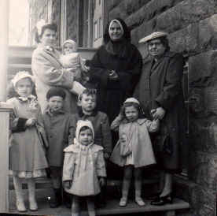

VISITING GHISLAINE AT THE CONVENT
VISITING GHISLAINE AT THE CONVENT


JACQUELINE LUCIE GHISLAINE MARIE-ANNA CARON
NICOLE MICHEL ANDRÉ. CHRISTIANE
FRANCINE
THE 2 PHOTOS ABOVE WERE TAKEN IN 1954 AT NICOLE'S OFFICIAL FIRST COMMUNION. IN FACT, NICOLE HAD RECEIVED COMMUNION FOR THE FIRST TIME THE YEAR BEFORE BUT, SINCE SHE WAS A BOARDER AT THE TIME, NO CEREMONY HAD BEEN HELD. AS FOR THE OFFICIAL PHOTO AT THE TOP, IT WAS TAKEN IN 1955 OR 1956, AT THE SAME TIME AS ANDRÉ'S.
NICOLE, BORN IN 1947, IS THE DAUGHTER OF GÉRARD CHARETTE AND JACQUELINE CONSIGNY. SHE MARRIES ROBERT GRISÉ IN 1968.